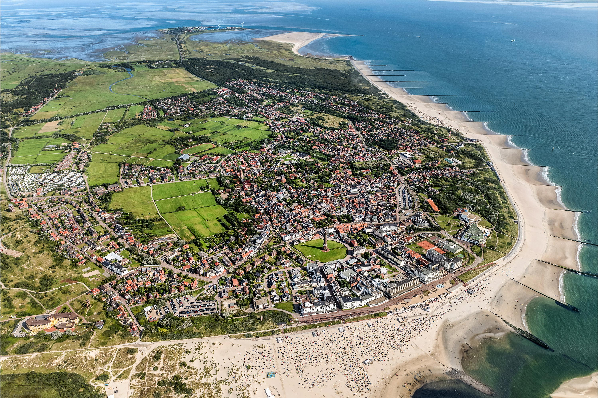
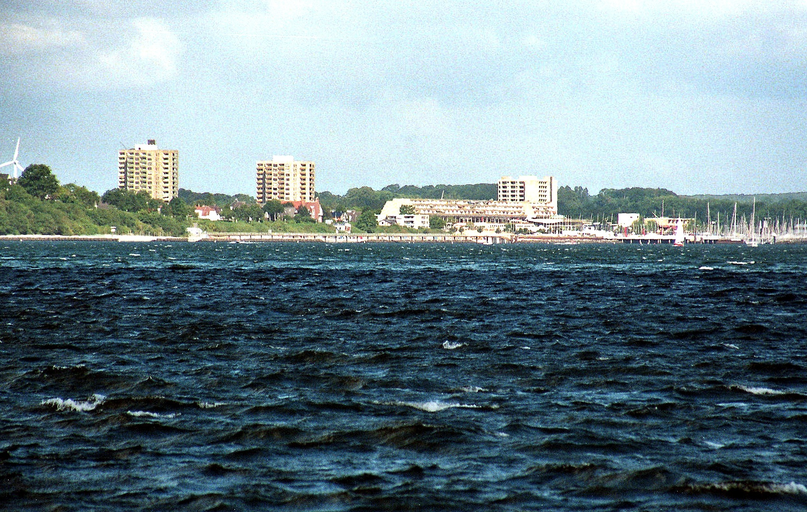

Чому варто обрати цей напрямок?
Відпочинок на Північному морі (узбережжя Німеччини, Нідерландів, Данії чи Великої Британії) ідеально підходить для спокійного релаксу, оздоровлення та поціновувачів дикої північної природи замість спекотного пляжного туризму!!!
Оренда житла

Популярні напрямки для відвочинку:
-
Острві Боркум: Затишні приватні апартаменти поблизу пляжу на Північному морі

Житло ви можете знайти тут: Варіанти на Боркумі -
Місто Кіль: Традиційні будиночки та квартири з морським колоритом

Житло ви можете знайти тут: Варіанти у місті Кіль
Лабораторні завдання
1.Оформлений текст
E = mc2,
where E - energy of the object,
m0 - it's mass,c - speed of light in vacuum, equals to 299 792 458 m/s